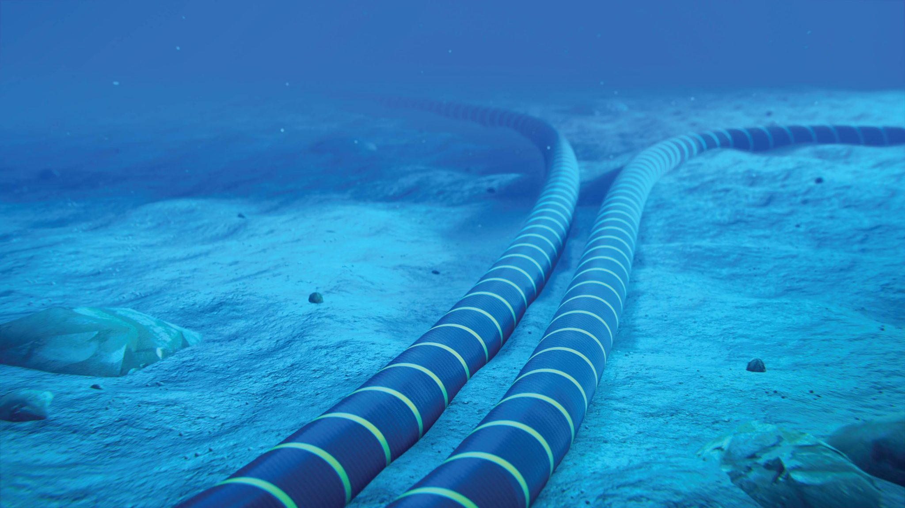

The Internet is a global tapestry of networks, linking continents, countries, and communities. From the fiber-optic strands under the ocean to the wireless signals in the air, it connects billions of people and devices every second.

This local diagram shows how routers, switches, and cables form the backbone of the Internet, creating pathways for data to travel across cities and oceans.
Thousands of miles of undersea cables ferry digital information across the globe, carrying streaming videos, emails, and live calls in the blink of an eye.

These undersea cables contain bundles of ultra-thin glass fibers that
carry data as pulses of light. Each fiber is wrapped in protective
layers—plastic sheaths, steel armoring, and waterproof jackets—to
withstand deep-sea pressure.
Along the route, signal boosters
(called repeaters) refresh the light pulses every 50-100 km, so your
videos, messages, and calls travel across oceans at nearly the speed
of light.
Check out the underwater submarine cable map here.
Learn about the Internet's fascinating history here.
Discover more on the Internet Wikipedia page.